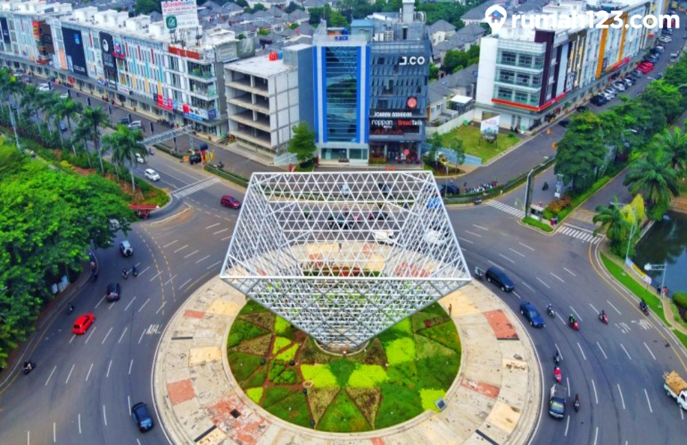
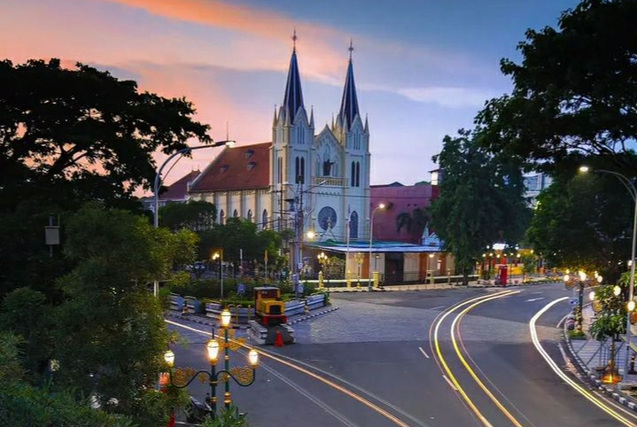
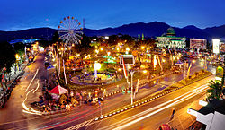

BEKASI
Kota Bekasi adalah salah satu kota di Provinsi Jawa Barat, Indonesia. Kota ini berbatasan langsung dengan Provinsi DKI Jakarta dengan jarak sekitar 24,4 km arah timur. Pada pertengahan tahun 2024, jumlah penduduk Kota Bekasi berjumlah 2.526.133 jiwa. Meskipun berstatus kota penyangga, kota ini merupakan kota terbesar di Provinsi Jawa Barat menurut jumlah penduduk. Kota Bekasi merupakan bagian dari kawasan metropolitan Jakarta Raya[a] dan menjadi kota penyangga dengan jumlah penduduk terbanyak se-Indonesia. Saat ini Kota Bekasi berkembang menjadi tempat tinggal kaum urban dan sentra industri
MALANG
>Urutan kota terbesar di Jawa Timur berikutnya adalah Kota Malang dengan luas 145,28 km persegi. Penduduk di kota ini mencapai 820.243 jiwa dengan pertumbuhan 3,9% per tahun.
Kota ini dijuluki sebagai Kota Sejarah, Kota Pariwisata, Kota Astra, Kota Apel, hingga Kota Budaya. Selain itu, julukan sebagai Kota Pendidikan juga disematkan pada Kota Malang karena terdapat berbagai perguruan tinggi ternama.
- Pusat Pendidikan: Malang adalah rumah bagi berbagai perguruan tinggi ternama, seperti Universitas Brawijaya dan Universitas Negeri Malang, yang menarik banyak mahasiswa dari luar daerah.
- Pariwisata: Kota Malang dikenal dengan suasana sejuk dan tempat wisata seperti kampung tematik, taman bunga, dan wisata alam di sekitarnya.
- Ekonomi Beragam: Sektor pariwisata, perdagangan, dan pendidikan menjadikan Malang kota dengan pertumbuhan ekonomi yang stabil.
- Industri Kreatif: Banyak kegiatan seni, budaya, dan industri kreatif tumbuh subur di kota ini.
BATU
Kota Batu menduduki urutan ketiga kota paling besar di Jawa Timur dengan luas 136,74 km persegi. Jumlah penduduknya mencapai 214.603 jiwa. Potensi keindahan alam yang menakjubkan membuat Kota Batu terkenal sebagai salah satu destinasi pariwisata terkemuka di Indonesia.
- Kota Wisata: Batu dikenal sebagai destinasi wisata utama di Jawa Timur, dengan daya tarik seperti Jatim Park, Batu Night Spectacular, dan wisata alam seperti Selecta dan Coban Rondo.
- Pertanian dan Perkebunan: Lokasinya yang sejuk dan subur menjadikan Batu penghasil apel, stroberi, dan sayuran yang penting di Jawa Timur.
- Ekonomi Berbasis Pariwisata: Pendapatan utama kota Batu berasal dari sektor wisata dan pendukungnya, seperti penginapan, restoran, dan pusat oleh-oleh.
| No | Nama Kota | Keunggunlan | Jumlah Penduduk |
| 1 | Bekasi | Memiliki infrastruktur dan fasilitas yang lengkap, seperti rumah sakit, fasilitas pendidikan, pasar, bank, dan akses hiburan | ± 2 juta jiwa |
| 2 | Malang | Universitas ternama, wisata alam, suasana sejuk, dan ekonomi berbasis perdagangan dan pariwisata. | ± 900 ribu jiwa |
| 3 | Batu | Pariwisata unggul seperti Jatim Park, wisata alam, dan hasil pertanian seperti apel. | ± 200 ribu jiwa |